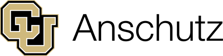

<footer>
    <div class="container">
        <div class="footer-content">
            <div class="footer-section">
                <h4>i3eye Consortium</h4>
                <div class="footer-led-by">
                    <p>Led by King's College London &amp; University of Colorado Anschutz</p>
                    <div class="footer-partner-logos" aria-label="Consortium partner logos">
                        
                        
                    </div>
                </div>
            </div>
            <div class="footer-section">
                <h4>Quick Links</h4>
                <ul>
                    <li><a href="about.html">About</a></li>
                    <li><a href="research.html">Research</a></li>
                    <li><a href="publications.html">Publications</a></li>
                </ul>
            </div>
            <div class="footer-section">
                <h4>Contact</h4>
                <p><a href="mailto:info@i3eye.org">info@i3eye.org</a></p>
                <p><a href="contact.html">Contact page</a></p>
            </div>
        </div>
        <div class="footer-bottom">
            <p>&copy; 2026 i3eye Consortium. All rights reserved. Updated 7 May 2026.</p>
        </div>
    </div>
</footer>